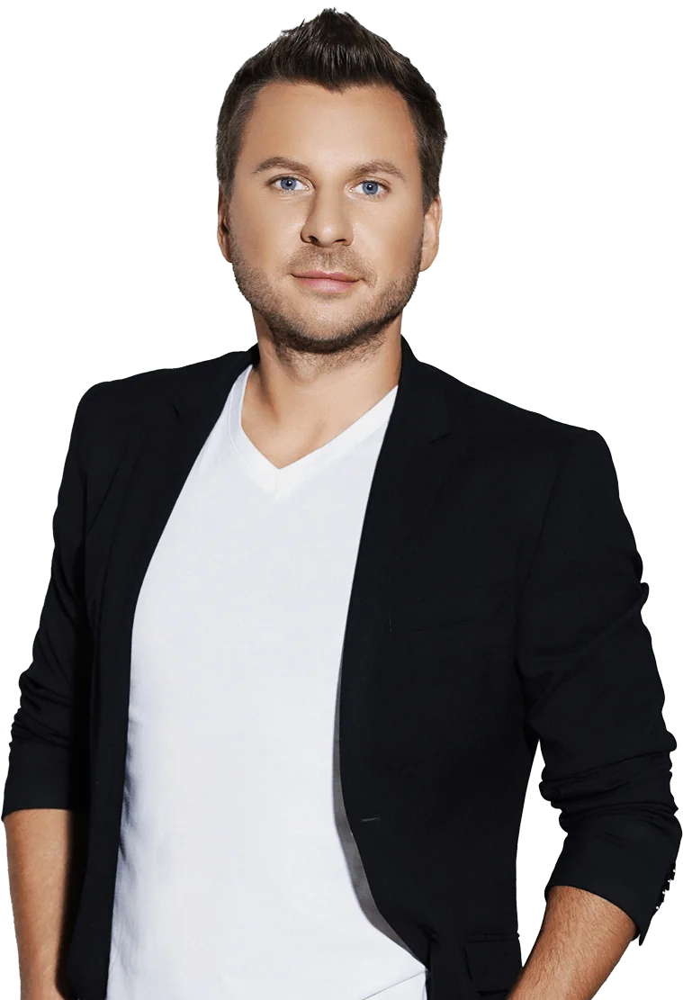
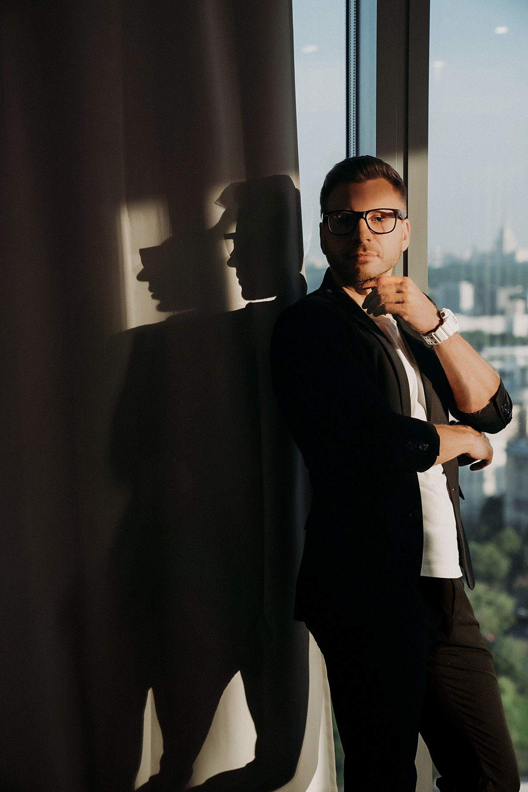

Сергей
Белов
Теле-радиоведущий. Ведущий мероприятий. Актер.
Биография
Ведущий канала о путешествиях “Поехали” и детской программы “С добрым утром, малыши” на канале “Карусель”. Ведущий телеканала "Культура" программы "Искатели", история которой насчитывает уже более 20 лет успешных телесезонов.
Работал ведущим на канале НТВ, три года являлся лицом канала ТВ-3, на котором вел две программы: “Параллельный мир” и “Удивительное утро”.
Кстати, в третьем сезоне Параллельного Мира, Сергей погрузился в мир экстрима. Прыгал с парашютом, тарзанкой, провел ночь в гробу, закопанный в землю, ходил по стеклам, углям, летал на планере и параплане, прошел обучение в школе каскадеров. А в одном из финальных выпусков программы Сергея посвятили в шаманы.
Вел утренние программы на радио «NewTone FM» и радио «Дача». Параллельно работал ведущим рубрики «Активная жизнь» в программе «НТВ-УТРОМ».
Работал редактором, продюсером, заместителем программного директора, участвовал в разработке и запуске утренних шоу.
Выпускник Школы Первого Канала. Увлекается спортом, исторической литературой и музыкой.
